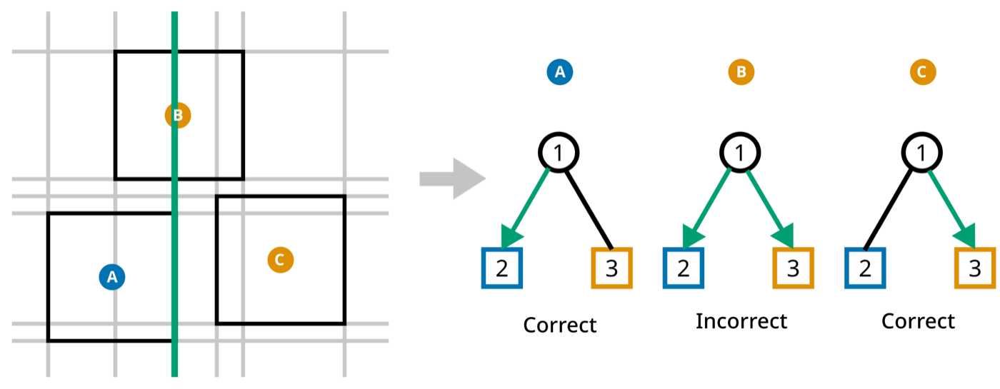
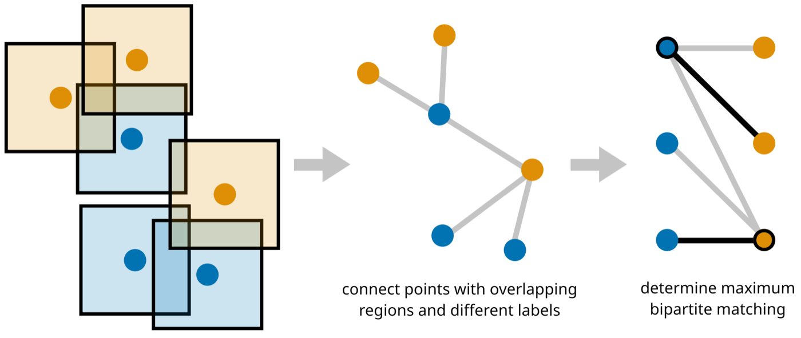
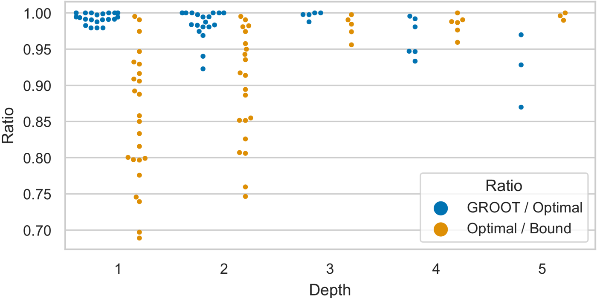

- min-max を 1 回の最小化に0-1 損失の二値分類の木では、攻撃者の最大化は「摂動の範囲からたどり着ける葉のうち、誤ったクラスを予測する葉があるか」に置き換わる（定理 1）。内側の攻撃を別に解く必要がない。
- 平均の敵対的精度 .7358 つのデータで 30 分ずつ学習したときの、GROOT の木から始めた MILP（MILP-warm）の値。GROOT は .726、TREANT は .692 だった（論文 Table 3）。
- GROOT は最適の 0.92 倍以上最適性を証明できた木と比べると、既存の貪欲法 GROOT の学習データでの敵対的精度は 1 つを除いて最適の 0.92 倍以上で、残る 1 つも約 0.87 倍だった。
頑健な決定木を作る既存の方法は貪欲法で、最適な木からどれだけ離れているかが分からなかった
ニューラルネットで敵対的な例が見つかって以来、攻撃に頑健なモデルの学習が研究されてきた。決定木でも、最悪の場合の情報利得や Gini 不純度で分岐を選ぶ Chen ら（2019）、攻撃者の能力を規則で書いて攻撃下の損失を貪欲に最適化する TREANT、最悪の場合の Gini 不純度の計算を速くして箱の形の攻撃に備える GROOT がある。どれも貪欲法で、各分岐を局所的に最適に選ぶだけである。
一方、決定木の学習では、混合整数線形最適化（MILP）、SAT、制約プログラミングに翻訳して最適な木を求める研究が進んでいた。決定木の学習は NP 完全だが、多くの（ふつうは小さな）データで最も精度の高い木を求められる。ROCT はこの 2 つの流れを合わせ、利用者が決めた攻撃モデルに対して最適に頑健な木を学習する。
0-1 損失の決定木では、攻撃者の最大化は「たどり着ける葉のどれかが誤りか」に置き換わり、全体が 1 回の最小化になる
頑健な学習は Madry ら（2017）の min-max 問題として書かれる。学習者はモデルのパラメータ \(\theta\) を選び、攻撃者は各点を摂動の範囲 \(S\) のなかで動かして損失を最大にする。
敵対的訓練のような方法は、内側の攻撃を近似的に解きながら外側を最小化するので計算が重い。ところが決定木は各点を 1 つの葉 \(t\) に送り、その葉のクラス \(c_t\) を予測する。同じ葉に着く摂動はどれも同じ結果になるので、摂動についての最大化は、摂動の範囲からたどり着ける葉の集合 \(\mathcal T_L^S\) についての最大化に置き換えられる。0-1 損失なら、そのどれかの葉が誤ったクラスを予測すれば損失は 1 になる。こうして問題は右辺の 1 回の最小化になり、MILP や MaxSAT のソルバーでまとめて解ける（定理 1）。
各点が左右どちらに進めるかを表す変数で、たどり着ける葉をすべて追い、誤りの数を最小にする
攻撃モデルは各点を中心とする箱の形の範囲である。特徴量ごとに減らせる量 \(\Delta^l\) と増やせる量 \(\Delta^r\) を決め、特徴量は \([0,1]\) に揃える。定式化はもっと柔軟だが、実験では半径 \(\epsilon\) の \(L_\infty\) の範囲だけを試している。
変数の記法は OCT から借りている。ノード \(m\) で使う特徴量を \(a_{jm}\)、しきい値を \(b\) で選び、点 \(i\) がノード \(m\) の左に進めるかを \(s_{im0}\)、右に進めるかを \(s_{im1}\) で表す。攻撃がなければ左右の一方にしか進めないが、攻撃があると両方が真になりうる。点を \(X_i-\Delta^l\) まで減らして左に届くか、\(X_i+\Delta^r\) まで増やして右に届くかで \(s\) を決める。葉 \(t\) までの道のすべてで \(s\) が真で、しかも \(c_t\neq y_i\) なら誤り \(e_i\) を真にし、\(\sum_i e_i\) を最小にする。
しきい値の表し方は 2 通りある。連続変数 \(b'_m\) を 1 つ使う方法は内積を含むので MILP でしか書けない。しきい値の候補ごとに二値変数 \(b_{vm}\) を置き、\(b_{vm}\Rightarrow b_{(v+1)m}\) と順に連鎖させる方法は、近くの点への影響だけを書けばよく、MaxSAT でも書ける。ソルバー（MILP は Gurobi 9、MaxSAT は LSU と RC2）と、GROOT の木から始めるか（warm）を組み合わせた 6 通りを試している。

摂動の範囲が重なる異なるラベルの点の最大マッチングから、どのモデルでも超えられない敵対的精度の上界が求まる
攻撃がなければ、同じ座標で違うラベルの点がない限り精度 100% は理論上ありうる。攻撃があると、違うラベルの 2 点の摂動の範囲が重なれば、両方を正しく予測することはできない。論文はクラス 0 の点とクラス 1 の点を頂点とし、範囲が重なる組を辺で結んだ二部グラフを作る。最小頂点被覆より少ない誤分類はありえず、König の定理から最小頂点被覆の大きさは最大マッチングの大きさに等しい。こうして、どのモデルにも当てはまる敵対的精度の上界が最大マッチングで計算できる（定理 2）。

この上界は実験の設計にも使っている。先行研究では攻撃の強さ \(\epsilon\) を恣意的に決めていたが、大きすぎると多数派のクラスを常に予測するのが最善になり、小さすぎると攻撃が学習に影響しない。論文はデータごとに、上界が取りうる範囲の 25%・50%・75% になる 3 つの \(\epsilon\) を選んだ。
8 つのデータで 30 分ずつ学習すると、GROOT の木から始めた MILP が平均の敵対的精度・順位・勝ち数のいずれも最もよかった
まず XOR の人工データ（\(\epsilon=0.1\)）で、貪欲法の GROOT と TREANT はよい分岐を 1 つも見つけられず、ROCT（MILP）は最適な解を見つけることを示した（論文 Fig. 5）。貪欲法が理論上いくらでも悪い木を返しうる例である。
次に、頑健な木の研究でよく使われる OpenML の 8 つのデータで、学習 80%・テスト 20% に分け、深さの上限を学習データの層化 3 分割交差検証で選んだ。どのアルゴリズムも 1 回の学習に 30 分を与え、MILP、Binary-MILP、LSU-MaxSAT は時間切れの時点の最良の解を使う。途中で解を返せない GROOT、TREANT、RC2-MaxSAT は、時間切れなら定数を予測する分類器に置き換えた。敵対的精度は、各テスト点の摂動の範囲に違うラベルの予測が入るかで判定している。
最もよかったのは、しきい値を連続変数で表し GROOT の木から始めた MILP-warm（.735、平均順位 1.583、17 勝）である。GROOT の木に頼らない LSU-MaxSAT も .729 とよかった。TREANT の値が低いのは時間切れが多かったためと論文は述べている。
途中で止めても木が得られ、深さ 2 までの多くのデータで最適性を証明でき、GROOT が最適に近いことも分かった
ソルバーを使う利点は、途中で止めても有効な木が得られることである。深さ 3 の木で学習データの誤分類の割合の平均を時間に沿って比べると、どの方法も時間をかければほぼ同じ値に収束した。LSU-MaxSAT は早くからよい値を出し、MILP-warm と Binary-MILP-warm は約 10 秒と約 100 秒で追いついた。warm start しない MILP の方法は追いつくのに約 1,000 秒かかった（論文 Fig. 6）。
LSU-MaxSAT で学習データ上の最適性を証明できた木と比べると、2 時間学習した GROOT の木の敵対的精度は 1 つを除いて最適の 0.92 倍以上で、残る 1 つが約 0.87 倍だった。最適性を証明できたのは、多くのデータでは深さ 2 まで、一部では深さ 4 までである。深さ 1 や 2 の最適な木がすでに上界に近い値を出す場合もあった。

論文は限界も挙げている。木の深さが計算時間に強く効き、定式化の大きさは学習データの特徴量の値の種類の数に比例して増える。数千点程度まで、特徴量が数十程度までの小さなデータなら、ROCT は最先端の貪欲法より性能を上げられる見込みが高いとしている。
最適決定木の MILP と SAT の定式化に、テスト時の攻撃への頑健性を初めて入れた研究である
ROCT の変数は OCT の記法を借りた MILP と、MaxSAT などの SAT の系統の両方で書ける。新しい点は、攻撃者の最大化を「たどり着ける葉」の論理和で置き換え、min-max 問題を通常の最適決定木と同じ 1 回の最小化に戻したことにある。論文は多くのデータで深さ 2 までの木の最適性を証明し、その最適な木と比べて、既存の貪欲法が最適に近いことを初めて示した。
同じ「頑健さ」でも、学習データの特徴量やラベルの誤差に備える Robust Classification（Bertsimas ら）や、学習時とテスト時の特徴量の変化に備える Justin ら とは、想定する摂動が違う。ROCT が想定するのは、テスト時に攻撃者が各点を箱の範囲で動かす場合である。
このページの数値・式・図は arXiv 版（2109.03857、AAAI の書式の原稿）による。AAAI のサイトは自動取得を受け付けなかったため、出版版の本文とは照合していない。arXiv 版は付録（データと半径の一覧、個別の結果）を含んでいない。書誌は Crossref で確認した。
@inproceedings{vos2022robust,
title = {Robust Optimal Classification Trees against Adversarial Examples},
author = {Vos, Dani{\"e}l and Verwer, Sicco},
booktitle = {Proceedings of the AAAI Conference on Artificial Intelligence},
volume = {36},
number = {8},
pages = {8520--8528},
year = {2022},
doi = {10.1609/aaai.v36i8.20829}
}